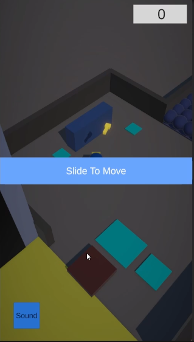

프로젝트 설명
Prison Resource Tycoon
광물을 채굴하고, 자원을 운반해 가공한 뒤 납품과 확장을 반복하는 하이퍼캐주얼 타이쿤 프로토타입 프로젝트입니다. 모바일 세로 화면 기준의 플레이 흐름을 전제로, 조이스틱 이동·자원 수집·가공·수용 인원 확장 루프를 기초 시스템으로 구현했습니다.

이 프로젝트의 목표는 단순한 프로토타입 제작이 아니라, 하이퍼캐주얼 타이쿤 장르의 핵심 루프를 작은 단위 시스템으로 분리해 구현해보는 것이었습니다. 플레이어 이동, 자원 수집, 운반, 가공, 납품, 확장 흐름을 각각 독립된 컴포넌트로 나누어, 이후 기능이 추가되더라도 연결이 쉬운 구조를 만드는 데 집중했습니다.
설계 포인트
모바일 조이스틱 기반 이동 구조
플레이어 이동은 가상 조이스틱 입력을 기준으로 구성했고, CharacterController와 중력 처리까지 포함해 세로형 모바일 환경에서도 안정적으로 이동하도록 만들었습니다. 방향 기준 Transform을 따로 두어 카메라 축과 이동 축 정렬도 가능하게 구성했습니다.
런타임 광물 그리드 생성
광물 자원을 미리 수동 배치하지 않고, 광산 영역의 스케일을 바탕으로 런타임에 자동으로 그리드를 생성하도록 만들었습니다. 이를 통해 맵 크기가 달라져도 같은 규칙으로 자원 필드를 만들 수 있도록 설계했습니다.
자원 종류별 인벤토리 구조
광물, 수갑, 돈을 각각 다른 자원으로 구분하면서도 하나의 CarrierInventory에서 관리하도록 구성했습니다. 수용량, 허용 자원 종류, UI 갱신 이벤트까지 함께 관리해 플레이 루프 전반에서 재사용할 수 있도록 했습니다.
문제 해결
문제 1. 광물 배치의 수작업 의존성
광산 규모가 달라질 때마다 자원을 수동으로 다시 배치하면 유지보수 비용이 커집니다. 이를 해결하기 위해 필드 스케일을 기준으로 좌표를 계산해 광물을 자동 생성하는 구조를 도입했습니다.
문제 2. 이동 입력과 중력 처리 단순화 필요
하이퍼캐주얼 장르라도 실제 지형 위를 자연스럽게 이동하려면 최소한의 중력 처리가 필요했습니다. 그래서 단순 transform 이동이 아니라 CharacterController를 사용해 이동과 낙하를 함께 처리했습니다.
문제 3. 자원 상태와 UI 동기화
수집량, 최대 용량, 자원 종류가 늘어나면 UI와 실제 데이터가 어긋날 수 있기 때문에, 인벤토리 변경 시 이벤트를 발생시켜 HUD나 시각 요소가 동일한 타이밍에 갱신되도록 구성했습니다.
핵심 코드
모바일 조이스틱 이동
가상 조이스틱 입력을 읽어 이동 방향을 계산하고, CharacterController를 통해 실제 이동을 처리하는 구조입니다. 이동 방향과 시각 회전을 분리해 캐릭터가 자연스럽게 이동 방향을 바라보도록 만들었습니다.
private Vector2 ReadMoveInput()
{
Vector2 moveInput = _joystick != null ? _joystick.Direction : Vector2.zero;
if (moveInput.magnitude < _inputDeadZone)
{
moveInput = Vector2.zero;
}
return moveInput;
}
private void MoveCharacter(Vector3 moveDirection)
{
UpdateVerticalVelocityFromGravity();
Vector3 currentVelocity = moveDirection * _moveSpeed;
currentVelocity.y = _verticalVelocity;
Vector3 moveDelta = currentVelocity * Time.deltaTime;
_characterController.Move(moveDelta);
}
런타임 광물 그리드 생성
광산 영역의 크기를 기준으로 X, Y, Z 축 반복문을 돌며 광물 위치를 자동 생성합니다. 덕분에 동일한 로직으로 다양한 크기의 광산 필드를 구성할 수 있습니다.
for (int y = 0; y < gridCount.y; y++)
{
for (int z = 0; z < gridCount.z; z++)
{
for (int x = 0; x < gridCount.x; x++)
{
Vector3 localPosition = localStart + new Vector3(x * spacing.x, y * spacing.y, z * spacing.z);
Vector3 worldPosition = transform.position + fieldRotation * localPosition;
OreSpawnSlot slot = new OreSpawnSlot
{
WorldPosition = worldPosition,
WorldRotation = worldRotation
};
_spawnSlots.Add(slot);
SpawnOrePickupAtSlot(_spawnSlots.Count - 1);
}
}
}
자원 인벤토리 관리
자원 종류별 수량과 용량을 하나의 인벤토리에서 관리하고, 값이 바뀔 때마다 이벤트를 발생시켜 UI와 시각 요소를 동기화하는 구조입니다.
public int AddResource(ResourceKind resourceKind, int amount)
{
amount = Mathf.Max(0, amount);
if (amount == 0 || !CanAcceptResource(resourceKind))
{
return 0;
}
int remainingCapacity = GetRemainingCapacity(resourceKind);
if (remainingCapacity <= 0)
{
return 0;
}
int addAmount = resourceKind == ResourceKind.Ore
? Mathf.Min(amount, remainingCapacity)
: amount;
if (resourceKind == ResourceKind.Ore)
_oreCount += addAmount;
RaiseInventoryChanged();
return addAmount;
}
배운 점
이 프로젝트를 통해 하이퍼캐주얼 장르는 단순해 보이더라도 실제로는 이동, 수집, 운반, 납품, 확장이라는 반복 루프가 자연스럽게 이어지도록 구조를 설계해야 한다는 점을 배웠습니다. 특히 작은 기능도 독립된 컴포넌트로 나누어야 이후 확장이 쉬워진다는 점이 인상적이었습니다.
개선 방향
앞으로는 자동 광부 AI, 업그레이드 수치, 생산 속도 밸런싱처럼 타이쿤 구조를 더 강화하고, 현재의 컴포넌트 구조를 바탕으로 콘텐츠를 붙이기 쉬운 방향으로 확장할 계획입니다. 또한 UI 피드백과 구매/해금 흐름을 더 직관적으로 개선하는 것도 다음 과제입니다.